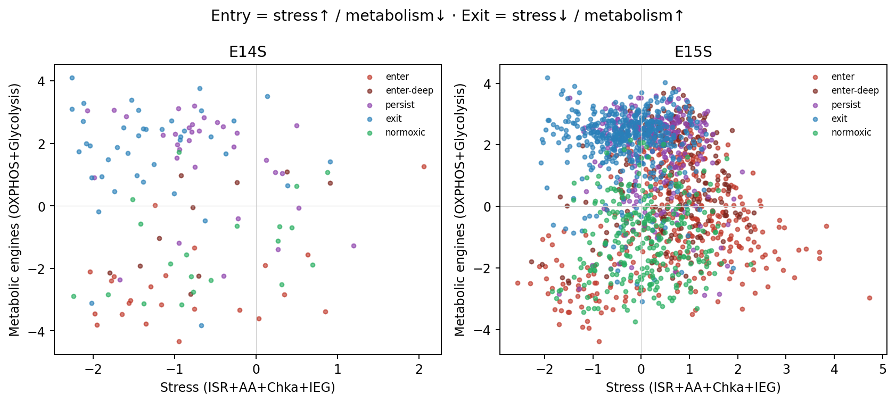
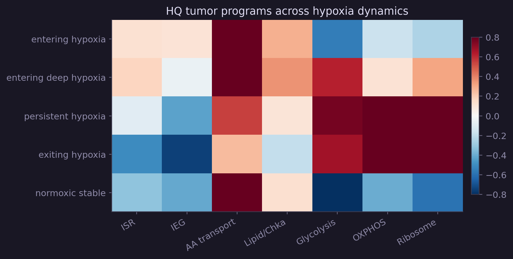
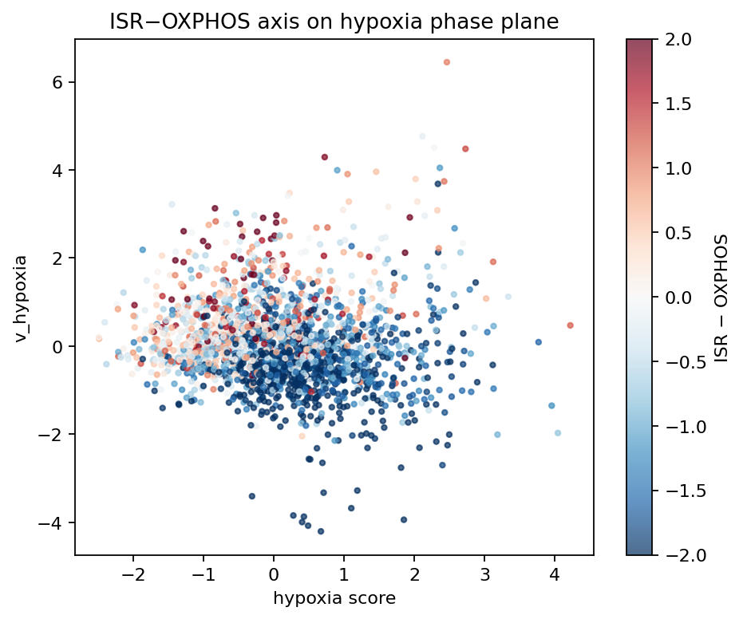
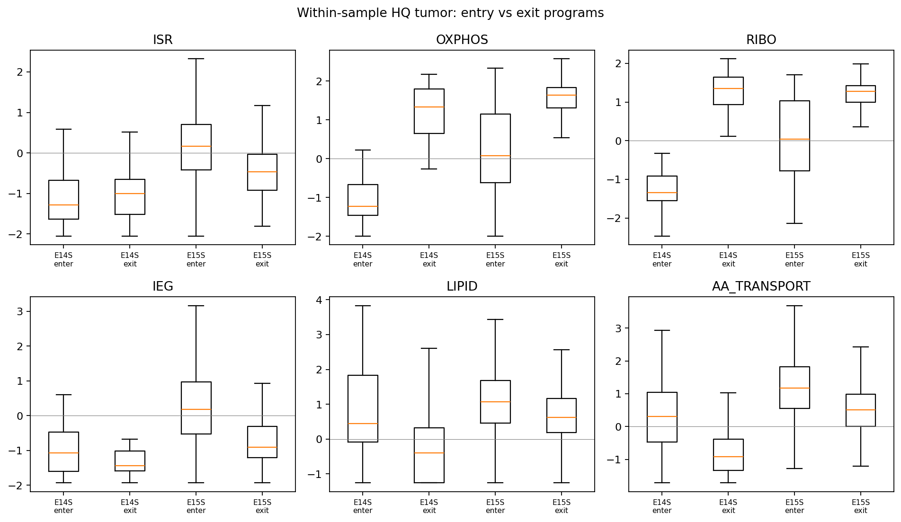
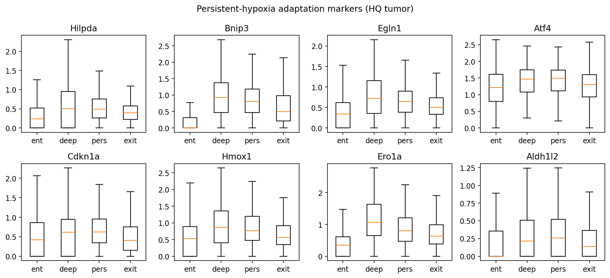

Sort design
Core finding

Molecular programs
Entering hypoxia
Ppp1r15a, Jun/Jund, Slc38a2, Chka, Neat1, Abl2, Ier3 — ISR, immediate-early response, amino-acid transport, and choline-kinase phospholipid stress. These genes also top residual correlation with hypoxia velocity after regressing out hypoxia score.
Exiting hypoxia
Cox5a, Ndufa4, Slc25a3/4, Rps/Rpl, Cd63, Prdx1 — OXPHOS subunits, ADP/ATP carriers, ribosomal recovery. Glycolysis genes rebound with OXPHOS (dual reboot), consistent with TME single-cell coupling of both pathways rather than a Warburg switch.


Why this is not an artifact
- QC: Analyses restricted to tumor cells with ≥1000 genes and <15% mitochondrial UMIs. The old
reverted_posthypoxiclabel is mostly low-quality (median ~600 genes, ~50% MT) and is excluded from claims. - Depth × hypoxia matching: Asymmetry survives bin-matched subsampling on hypoxia score and gene detection.
- Same-score bifurcation: Among mid–high hypoxia cells, top vs bottom velocity terciles already diverge on ISR/OXPHOS/RIBO/LIPID/AA (proliferation does not).
- Cross-face replication: E14S (immune-hot) and E15S (tumor/stroma core) are complementary faces of one experiment; dual metabolic reboot replicates in both despite tiny E14S tumor n.

| Contrast | E14S p | E15S p | Matched p |
|---|---|---|---|
| Stress (enter > exit) | 3.0×10−2 | 8.2×10−57 | 2.4×10−44 |
| OXPHOS+Glyc (exit > enter) | 4.2×10−10 | 4.3×10−77 | 6.3×10−16 |
| Ribosome (exit > enter) | 6.9×10−11 | 1.6×10−67 | 5.6×10−17 |
Persistent hypoxia is its own state
Cells locked in persistent hypoxia are not merely “between” entry and exit. Relative to both arms they upregulate a compact adaptation set:
Hilpda · Bnip3 · Egln1 · Atf4 · Cdkn1a · Hmox1 · Ero1a · Aldh1l2
This maps onto lipid-droplet buffering (Hilpda), mitophagy (Bnip3), PHD2 oxygen sensing (Egln1), sustained ISR (Atf4), and checkpointing (Cdkn1a) — a dwell program rather than a transit program.

Novelty framing
- Post-hypoxic fate/memory is known from reporter systems (e.g. Godet/Semenza). Here the asymmetry is read out from spliced/unspliced RNA velocity in native MC38 spatial tissue — no genetic reporter.
- Classical models cast hypoxia as glycolysis↑ / OXPHOS↓. In this velocity frame, entry suppresses both engines under ISR stress; exit reboots both together with ribosomes. That matches TME single-cell reports that OXPHOS and glycolysis often co-vary in vivo, and adds temporal directionality.
Chkais elevated specifically on entry (velocity residual), whereas chronic HIF often represses CHKA in vitro — suggesting an acute stress/phospholipid phase distinct from chronic hypoxic choline shutdown.- Hilpda-high persistence is a known hypoxic lipid-droplet adaptation; placing it specifically in the velocity-defined persistent dwell (vs enter/exit transit) is the new mapping.
Caveats & next experiments
- E14S contributes few HQ tumor cells; ISR gene-set power is limited there, but metabolic reboot and stress direction still agree.
- Spatial niche distances (Spp1 TAM, CD8) are weak/mixed after QC — not a primary claim.
- Validate with timed hypoxia→reoxygenation (smFISH:
Ppp1r15a/Slc38a2/ChkavsCox5a/Rps4x), ISR perturbation, and Hilpda lipid-droplet imaging in persistent cores.